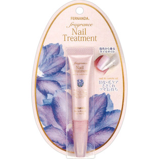

返回列表
产品名称：フェルナンダ フレグランスネイルトリートメント マリアリゲル

ＦＥＲＮＡＮＤＡ ＪＡＰＡＮ フェルナンダ フレグランスネイルトリートメント マリアリゲル ６Ｇ
メーカー ＦＥＲＮＡＮＤＡ ＪＡＰＡＮ
JANコード 4571395820307
商品の特徴
指先から香るネイルオイル
甘皮・爪ケア・ささくれ
ツヤ長持ち
成分・分量
＜全成分＞
ヒマワリ種子油、ヒマシ油、オリーブ油、シリカ、香料、センチフォリアバラ花エキス、ローズヒップ油、アボカド油、マカデミアナッツ油、ブドウ種子油、アーモンド油、トコフェロール、ヘキサ（ヒドロキシステアリン酸／ステアリン酸／ロジン酸）ジペンタエリスリチル、ジメチコン、メドウフォーム-δ-ラクトン、BG、水
用法及び用量
爪と甘皮に適量をのばし、指先でマッサージ をするようになじませてください。